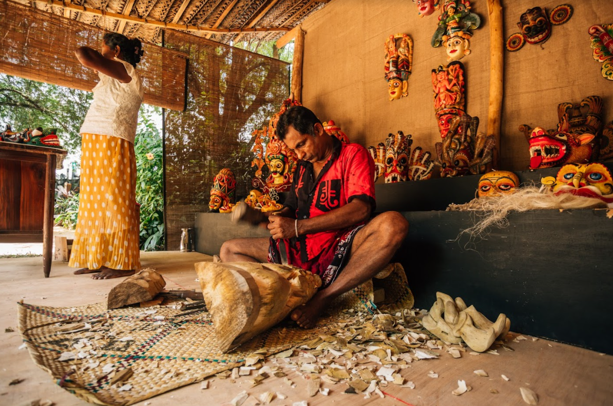
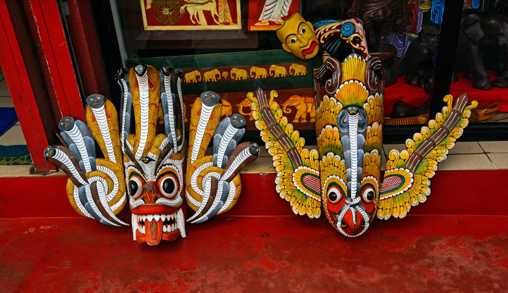
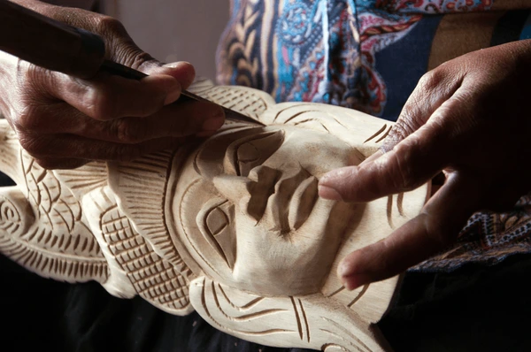

Masks, Rituals, and Cultural Storytelling of Sri Lanka
Ambalangoda, located on Sri Lanka’s southwest coast, is famous for its ancient tradition of handcrafted wooden masks. These masks are more than works of art — they represent deep cultural, spiritual, and theatrical roots tied to folklore, healing rituals, and historic performing arts.
The Ambalangoda mask is one of Sri Lanka's most iconic and recognizable traditional crafts. More than mere souvenirs, these vibrant, often dramatic masks are three-dimensional storybooks carved from local wood, deeply rooted in the island's folk religion, healing rituals, and performing arts. The coastal town of Ambalangoda, between Colombo and Galle, is the undisputed epicenter of this centuries-old craft.
These masks are not decorative objects in their original context. They are powerful ritual tools believed to embody spiritual forces. When worn by a trained dancer or exorcist (edura), the mask is thought to transform the wearer into the character or deity it represents, channeling its energy for healing, protection, or storytelling.
Skilled artisans use traditional tools and natural materials, carving masks from lightweight kaduru wood. After shaping, masks are painted with vivid natural dyes, each color holding symbolic meaning. This craftsmanship has been passed down through generations in Ambalangoda.
Ambalangoda masks appear in cultural performances like Kolam, Sanni Yakuma, and Devil Dance rituals, which blend healing practices with theatrical drama to address illness, misfortune, and spiritual imbalance.